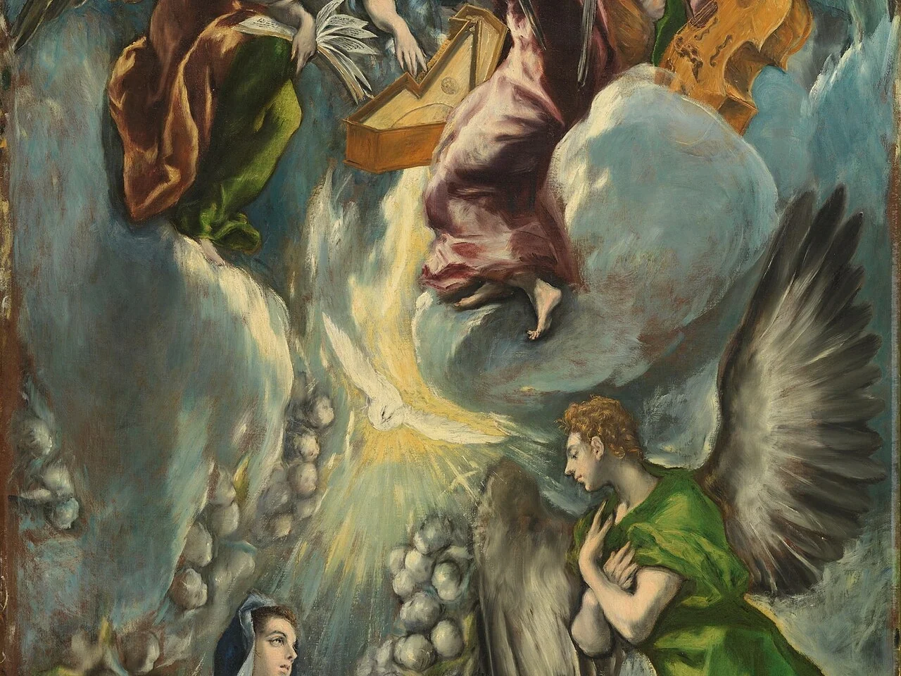
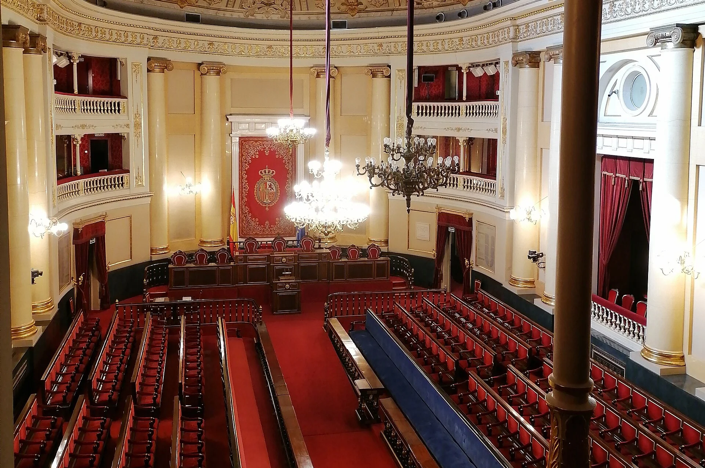
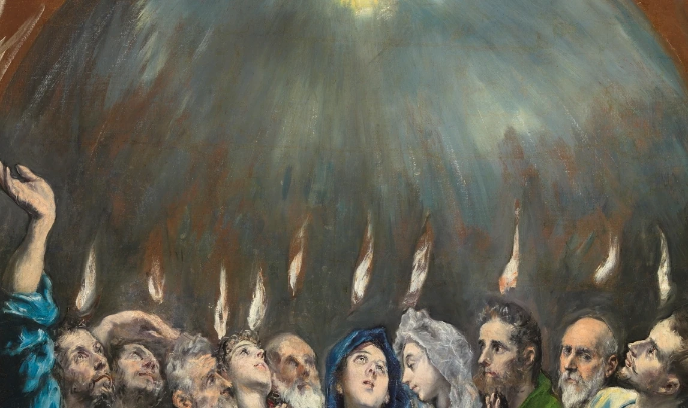

아직 펼치지 않은 카드
아직 펼치지 않은 카드
1600년 여름, 톨레도에서 온 수레가 마드리드의 한 학교 성당으로 큰 그림들을 실어 왔어요. 그 제단화(성당 제단 뒤에 세우는 큰 그림 묶음)의 위층 오른쪽에 걸렸던 것으로 보이는 그림이, 성령이 내려온 장면을 그린 엘 그레코(El Greco)의 「성령강림」이에요. 기도하던 사람들 머리 위의 불꽃과 빛나는 비둘기, 그리고 우리를 바라보는 한 사람을 찾아보세요.
아주 옛날 스페인의 화가 엘 그레코 아저씨가 그린 그림이야. 기도하던 사람들 머리 위에 작은 불꽃이 내려왔대. 하얀 비둘기랑, 우리를 쳐다보는 할아버지도 찾아볼까?
검수 전 시안이에요(기준서 1판). 성경은 풀어 쓰고 개역개정 링크를 달았어요. 그림 속 사람이 누구인지는 해설이 그렇게 본다고 밝혔어요. 상상은 ‘눈 감고 상상해 보기’에만 썼어요.
마드리드의 ‘강생의 성모 학교’는 세운 사람의 이름을 따서 ‘도냐 마리아 데 아라곤 학교’라고 불렸어요. 강생은 하느님이 사람으로 태어났다는 뜻이고, 성모는 예수의 어머니 마리아예요. 이곳은 아우구스티노회라는 수도회의 수도자들이 지내던 학교 겸 수도원이었어요(티센 미술관, 스페인 상원 안내 책자).
마드리드시의 문화유산 자료는 도냐 마리아 데 코르도바 이 아라곤(doña María de Córdoba y Aragón), 곧 학교 이름 속의 그 도냐 마리아가 1581년에 이 학교를 세웠다고 적어요.
학교 성당은 1599년에 봉헌(하느님께 바침)되었어요. 1600년 7월, 톨레도에 있던 엘 그레코의 작업실에서 마드리드까지 그림을 실어 나를 수레꾼과, 제단화 조립을 맡을 사람을 구했어요. 그때 제단화가 다 되었던 거예요(티센 미술관).

티센 미술관의 설명에 따르면, 제단화는 두 층이었던 것 같아요. 아래층 가운데에 「수태고지」, 그 왼쪽에 「목자들의 경배」, 오른쪽에 「그리스도의 세례」가 있었어요. 위층 가운데에는 「십자가의 그리스도」, 왼쪽에 「부활」, 오른쪽에 「성령강림」이 있었어요. 그림들이 흩어지며 어디에 있던 그림인지가 제대로 적히지 않아, 자리는 지금도 짐작으로 그려요(프라도 학술 대회 논문집, 2001).
엘 그레코는 1541년 그리스의 크레타섬에서 태어나 베네치아와 로마의 화가들에게 배웠어요. 서른네 살에 스페인으로 와 마드리드와 주로 톨레도에서 일했고, 1614년 톨레도에서 세상을 떠났어요(프라도 미술관).
엘 그레코 아저씨가 큰 그림 여러 장을 그려서, 수레에 싣고 마드리드의 성당으로 보냈대.
물어보기성령강림 그림은 제단화의 어디쯤에 걸렸을까?
그리스도인들은 성령(하느님의 영)을 흔히 비둘기로 그려 왔어요. 교회 절기에 맞춰 그림을 풀이해 온 아멜리아 매키(Amelia McKee)의 해설은 이 모습이, 예수가 세례를 받을 때 성령이 비둘기 같은 모습으로 내려왔다는 이야기(누가복음 3장 22절)에서 왔다고 설명해요.
프라도에 있는 이 제단화 그림 가운데 세 점에 빛나는 비둘기가 나와요. 「수태고지」에서는 천사와 마리아 사이에, 「그리스도의 세례」에서는 세례를 받는 예수의 머리 위에, 「성령강림」에서는 맨 꼭대기에 있어요.


「수태고지」는 천사 가브리엘이 마리아를 찾아와, 성령이 내려와 아기를 갖게 될 거라고 알린 장면이에요(누가복음 1장 35절). 「그리스도의 세례」에서는 세례자 요한이 조개껍데기로 예수의 머리에 물을 부어요.
하얀 비둘기는 성령을 뜻해. 두 그림에서도 비둘기를 찾아볼까?
물어보기비둘기는 그림 어디에 숨어 있었어?
사도행전은 죽었다가 다시 살아난 예수가 하늘로 올라간 뒤, 예수의 어머니 마리아가 사도(예수가 뽑아 보낸 열두 제자)들과 함께 마음을 모아 기도했다고 전해요(사도행전 1장 3·9·14절).
그리고 오순절에 모두 한곳에 모여 있을 때, 거센 바람 같은 소리가 집을 채우고 불처럼 갈라진 혀 같은 것이 한 사람 위에 하나씩 내려앉았다고 전해요(사도행전 2장 1~4절).
오순절(펜테코스테)은 그리스어로 ‘50일째’라는 뜻이고, 유대인의 옛 명절 ‘칠칠절’을 이르는 이름이에요. 교회는 부활절에서 50일째 되는 날 이 일을 기려요(1912년 가톨릭 백과사전).
나도 기도하던 사람들 사이에 섰다고 생각해 보세요. 그림 속 여섯 곳을 하나씩 눌러 찾고, 작은 것은 ‘가까이 보기’로 들여다보세요.
엘 그레코, 「성령강림」, 1596~1600년 무렵, 캔버스에 유채 · 마드리드 프라도 미술관 · 그림: 엘 그레코 · 퍼블릭 도메인 · 위키미디어 공용
그림 위의 숫자나 아래 번호를 눌러 보세요.
다 찾았어요. 위에서 내려온 빛이 작은 불꽃이 되어, 한 사람 한 사람 위에 머물러요.
매키의 해설은 길게 늘인 몸과 그 위의 불꽃이 마치 타오르는 횃불처럼 위로 솟는 것 같다고 설명해요.
위 노래 단추로 듣는 노래는 성령강림 미사에서 부르는 「Veni, Sancte Spiritus」예요. 첫 절은 “오소서, 성령이여, 하늘에서 당신 빛의 빛살을 보내 주소서”라고 노래해요(라틴어에서 이 안내서가 옮김).
1912년 가톨릭 백과사전은 이 노래가 세 줄씩 열 절로 되어 있고, 중세의 글쓴이들이 ‘황금 부속가’라고 불렀다고 적어요. 부속가는 미사에 덧붙여 부르는 노래로, 9세기 무렵부터 복음을 읽기 전 알렐루야(‘하느님을 찬양하라’는 뜻의 노래)에 이어 부르려고 지었어요. 트리엔트 공의회(16세기 가톨릭 교회의 큰 회의) 뒤에 남은 부속가는 넷뿐이었는데, 이 노래가 그 하나예요(디트로이트 대교구 신문, 2022).
사람들 머리 위에 작은 불꽃이 하나씩 내려왔어. 하나씩 눌러 찾아볼까? “오소서, 성령이여” 노래도 들어 보자.
물어보기그림 밖의 우리를 쳐다보는 사람은 어디 있었어?
1809년, 나폴레옹이 스페인 왕으로 세운 형 조제프 보나파르트(José Bonaparte)의 정부가 수도원 재산을 거두어들이면서 수도자들은 쫓겨났어요(스페인 상원 안내 책자, 스페인 왕실 컬렉션 갤러리). 미술사가 앤드루 그레이엄딕슨에 따르면, 이듬해인 1810년 이 프랑스 점령기에 제단화도 해체되었어요.
1813년, 남쪽 항구 도시 카디스에 모였던 스페인 의회(코르테스)가 마드리드로 옮겨 오면서 이 옛 성당을 회의장으로 골랐어요. 회의장은 1814년 5월 2일에 문을 열었어요(상원 안내 책자).


1820년 건축가 이시드로 곤살레스 벨라스케스가 옛 성당을 신고전주의(옛 그리스·로마 건축을 본뜬 양식) 회의장으로 바꾸었어요. 1837년부터 이 건물은 스페인 상원이 되었어요(상원 안내 책자, 마드리드시 문화유산 자료).
그림들이 걸려 있던 성당은 지금 스페인 상원 건물이 되었어. 나라의 일을 의논하는 곳이야.
물어보기옛날 성당은 지금 무엇으로 쓰일까?
눈 감고 상상해 보기
모두 한방에 모여 기도하고 있어요. 갑자기 거센 바람 같은 소리가 방을 가득 채워요. 고개를 들자 머리 위마다 작은 불꽃이 하나씩 내려앉아요. 옆 사람의 얼굴이 불빛에 환해지고, 누군가는 두 팔을 번쩍 들어요.
눈을 감아 봐. 사람들이 모여 기도하고 있어. 휘익, 바람 소리가 나더니 머리 위에 작은 불꽃이 하나씩 내려왔어!
다시 보면, 사람들 머리 위에 작은 불꽃이 앉아 있고, 한 사람만 그림 밖의 우리를 봐요.
내 마음에 불이 붙었던 순간이 있었나요? 무엇이 나를 움직였나요?
기도할 때 내 마음은 어떤 모양일까?
마음에 닿는 한 줄을 고르거나 직접 써 보세요. 한 줄을 남기면 이 자리의 도장이 찍혀요. 이 기기에만 저장돼요.
이야기를 보다 궁금해질 만한 것들이에요. 답을 읽거나 짧은 영화로 보세요.

아직 펼치지 않은 이야기예요. 누르면 이야기가 펼쳐지고 색이 돌아와요. 더 알고 싶으면 근거를 따라가 보세요.
다 펼치면, 다음에 오실 때 새 이야기가 찾아와요.
오늘의 뒷이야기는 여기까지예요. 다음에 오시면 새 이야기가 기다리고 있어요.
펼친 뒷이야기 · 누르면 다시 볼 수 있어요
제단화는 몇 점이었나 프라도 미술관의 쉬운 안내는 엘 그레코가 「수태고지」와 다른 여섯 점, 모두 일곱 점을 그렸고 그 가운데 네 점이 프라도에 있다고 적어요. 티센 미술관의 설명은 여섯 점의 자리를 적고, 그 가운데 다섯 점이 프라도에 있다고 해요.
「성령강림」도 그 하나일까 미술사가 그레이엄딕슨은 엘 그레코 연구자 대부분이 이 그림을 여러 폭 제단화의 하나로 본다고 적어요. 이 카드 책 앞면도 ‘윗부분이었던 것으로 보여요’라고 적었어요. 프라도 미술관의 작가 소개는 「부활」과 「성령강림」을 이 제단화에 넣는 것이 ‘매우 논란이 있다’고 적어요.
자화상일까 아멜리아 매키의 해설은 그림 밖을 보는 사람이 엘 그레코의 자화상일 것(probably)이라고 해요. 확정된 이야기는 아니에요.
노래는 누가 지었나 1912년 가톨릭 백과사전은 여러 기록을 소개해요. 1220년 무렵의 한 기록은 교황 인노첸시오 3세가 지었다고 하고, 1210년 무렵의 한 글쓴이(피트라 추기경은 영국 시토회 수도자로 봐요)는 캔터베리 대주교 스티븐 랭턴이 지었다고 해요. 백과사전은 인노첸시오 3세 쪽을 더 그럴듯하다고 적고, 디트로이트 대교구 신문(2022)은 랭턴 쪽이 더 그럴듯하다고 봐요.
수레는 얼마나 늦었나 프라도 학술 대회 논문집(2001)에서 레티시아 루이스 고메스는 제단화가 여섯 달 늦게 마드리드에 닿았다고 적고, 호세 알바레스 로페라는 약속보다 일곱 달 늦게 넘겼다고 적어요.
학교는 언제, 누가 세웠나 마드리드시 자료는 1581년에 도냐 마리아가 세웠다고 적어요. 같은 논문집의 아구스틴 부스타만테는 1580년 도냐 마리아가 집을 사서 학교를 시작했고 1581년 1월 20일 왕의 허가가 났다고 적고, 바티칸의 오로스코 약전은 오로스코가 죽기 두 해 전에 이 학교를 세웠다고 적어요.
확인한 날 · 2026년 11월 18일 · 바뀌기 쉬운 정보라 정기적으로 다시 확인해요
「성령강림」은 마드리드 프라도 미술관(파세오 델 프라도)에 있어요. 마드리드시 관광 안내에 따르면 미술관은 월요일부터 토요일까지 10시부터 20시까지, 일요일과 공휴일은 10시부터 19시까지 열어요.
월요일부터 토요일까지는 문 닫기 전 두 시간, 일요일에는 마지막 시간대에 무료로 들어갈 수 있어요. 가까운 지하철역은 2호선 방코 데 에스파냐예요. 가기 전에 미술관 누리집에서 다시 확인하세요.
스페인 상원 건물은 해마다 여는 ‘문 여는 날(Jornadas de Puertas Abiertas)’에 시민을 맞아요(상원 안내 책자). 그 밖의 방문 방법은 상원 누리집에서 확인하세요.
그림 속 여섯 곳을 모두 찾아 읽으면 카드에 금박이 입혀져요.
성령강림 미사에서 부르는 노래 「오소서, 성령이여」를 들어 보거나, 아이와 함께 ‘영화처럼 보기’를 끝까지 보면 카드가 채색돼요. 둘 가운데 하나만 해도 돼요.
‘처음 만나는 기독교 문화’의 깊은 카드예요. 사람 얼굴이 알아볼 만큼 나오는 사진은 쓰지 않았어요. 카드 단계와 남긴 글은 이 기기에만 저장돼요.
영화처럼 보기 · 약 3분
화면을 누르거나 → 키를 누르면 넘어가요. 그냥 두어도 자막이 저절로 넘어가요.